3 Loss functions and regression models
I started this lecture with a few generic discussion items that I won’t repeat here:
- Some general remarks on the logistics (e.g., transcripts versus notes on Brightspace).
- Some remarks on earlier courses that covered some materials on probability distributions in our computing science Bachelor programme, which are not relevant for many students.
- I then repeated the part on absolute versus squared loss that I had messed up on my first attempt in lecture 2. I have already worked that part in to the transcript of lecture 2.
3.1 Considerations for choosing different loss functions
Let’s recall two loss functions we discussed previously. Suppose we have a prediction \(\mu\) and an observation \(x\), then we defined:
- The absolute loss \[L_1(x,\mu) = |x - \mu | \]
- The squared loss \[L_2(x,\mu) = (x - \mu)^2 \]
The squared loss is very common, but why is that actually the case? There often isn’t a scientific justification. It may have more to do with
- The distribution of the data at hand
- Technical convenience
Regarding 1., the quadratic loss “punishes” outliers severely. If, for example, we have a large dataset that may contain errors (e.g. data entry errors; somebody might just have accidentally typed a few extra zeros too much or maybe a Dutch decimal comma was wrongly interpreted as a thousand’s separator) and we can’t easily correct those, we may not want to use the quadratic loss, as the outlier might influence the fit too much. In that case, e.g. the absolute loss might be a better choice. Hence, this consideration depends on the domain and is based on your understanding of the data.
Regarding 2., the quadratic loss is often analytically tractable, and it is usually smooth (twice differentiable everywhere) which helps with numerical optimization. It can sometimes be harder to numerically optimize the absolute loss, especially if you don’t use a high-quality optimizer such as nlm in R.
3.2 Linear regression and the effect of outliers
This property of the squared loss – that severely punishes large errors – is important to understand some of the properties of linear regression, as we’ll illustrate now.
Let’s look at an example dataset we’ll use in this lecture to illustrate some of the techniques. This dataset is built into R, and contains air quality measurements. We’ll focus on two variables, the temperature (X axis, in degrees Fahrenheit) and the wind speed (Y axis, in knots):
How is wind speed affected by temperature?
To already answer this question, let’s use the lm function in base R to add a regression line to this plot – and we’ll make sure later that we understand exactly how it is computed:
with( airquality, {
plot( Temp, Wind, cex=.5,
xlim=c(0,100), ylim=c(0,40) )
m <- lm( Wind ~ Temp )
abline( m, col=2 )
} )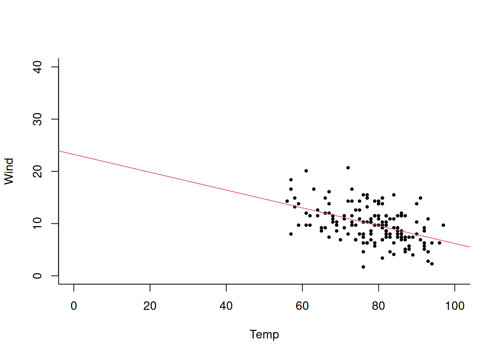
As we can see, this regression line appear to fit quite well, as it goes “through” the data.
Now, let’s add an outlier to this dataset, and see what that does to our regression line.
temp <- airquality$Temp; wind <- airquality$Wind
temp[1] <- 0; wind[1] <- 0
plot( temp, wind, cex=.5,
xlim=c(0,100), ylim=c(0,40) )
m <- lm( wind ~ temp )
abline( m, col=2 )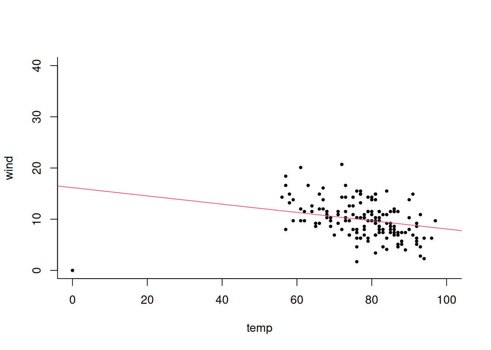
We can see that this single outlier has a quite big effect on the regression model. We’ll understand better why this is in a moment, but just to give an idea: fitting this linear regression model essentially minimizes a squared loss.
Regression fitting can be compared to a tug-of-war: each data point pulls on the line, and the line balances these forces. With squared loss, points farther from the line exert disproportionately stronger pulls, since the force grows with the squared distance. This means that a single outlier can heavily influence the regression line, In an extreme case, a single point could have more influence than the rest of the data combined.
In R, you can quite easily generate a plot that allows you to diagnose how much each point “pulls” on the line:
temp <- airquality$Temp; wind <- airquality$Wind
temp[1] <- 0; wind[1] <- 0
plot( temp, wind, cex=.5,
xlim=c(0,100), ylim=c(0,40) )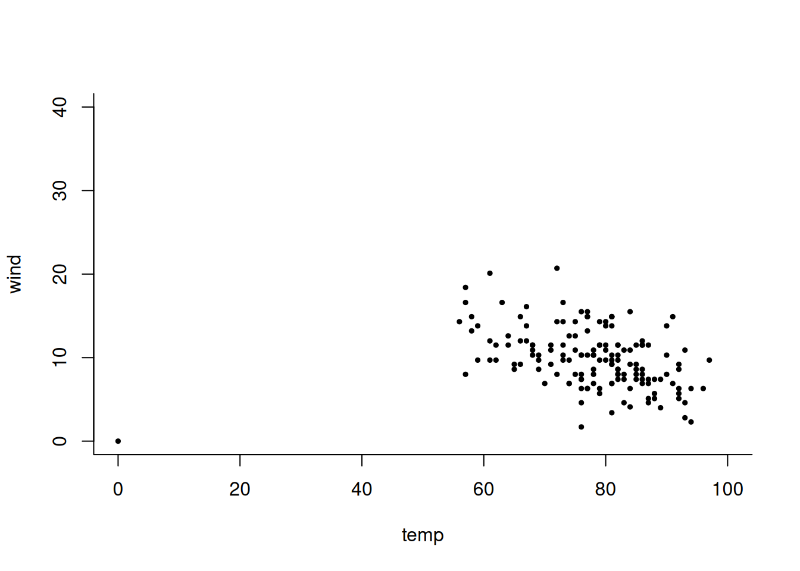
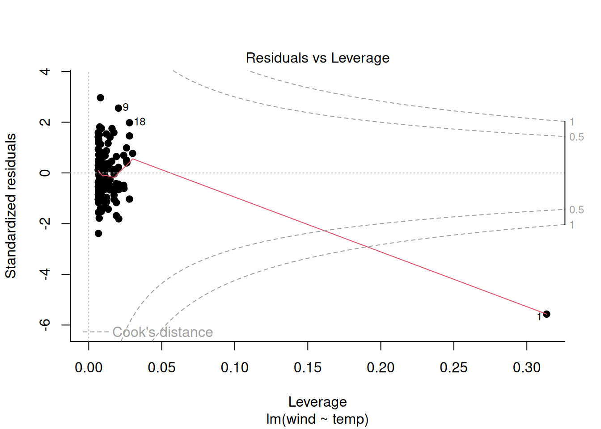
The Cook’s distance measures how much “pull” each point has (X axis), considering how far it is away from the line (Y axis). Points should fall within the dashed region. Here, we can see very clearly that the outlier we added (data point 1) has much more “pull” than it should have.
If you see several points with too much leverage, you could see if those are errors and correct them. If there are too many of those, or the data is coming from a source you can’t change (such as a faulty device), you could instead use a different loss.
3.3 Recap: Expectation, mean, and squared error
Let’s now continue to formally introduce regression models.
Recall that last week on Monday, we talked about the expectation \(E[X]\) for a variable \(X\), which we defined as:
\[ E[X] = \int P(x) \, x \, \, dx \]
We had also seen that the sample mean \(\bar{x}=(x_1 + \ldots + x_n)/n\) minimizes the sum of squared errors (SSE)
\[ \bar{x} = \text{argmin}_{\mu} \sum_{i=1}^n (x_i - \mu)^2 \]
How are these two related?
As \(n \to \infty\), the sample mean \(\bar{x}\) converges (in probability) to \(E[X]\). This fact is known as the law of large numbers. Convergence in probability is a tricky notion that I won’t get into here, but if you’re curious, it is very well explained here: https://www.youtube.com/watch?v=Ajar_6MAOLw
But just for our intuition, as we raise our sample size, our sample mean is going to get closer and closer to the actual mean. For example, if you flip a coin a million times, then the proportion of heads is very likely going to be very close to 50%.
Now that was really the simplest case of making a prediction right so we had only we were only asked for one number we were saying like please give make one prediction but for things like regression models we want to use other information to make that prediction so now we are going to move to the conditional variant of that. The conditional expectation is defined as
\[ E[Y \mid X] = \int P(y \mid x) \, y \, \, dy \]
Many statistical models can be understood as models of conditional expectation. In such a model, I am generally uninterested in how exactly the data will be distributed around my prediction; I am simply trying to make the best prediction I can.
The linear regression model, which we defined earlier as a conditional probability model, can also be defined as a conditional expectation model:
\[ E[Y \mid X] = \beta X + \alpha \]
Note how this equation says nothing about probabilities, and does not contain an explicit error term anymore. That’s the key difference between a conditional probability model (which defines the entire distribution \(P(y \mid x)\)) and a conditional expectation model (the expectation \(E[ y \mid x]\) is only one property of the distribution \(P(y \mid x)\)). This is important to keep in mind given the widely held opinion that “linear regression can only be done if the data is normally distributed” (which is wrong in several subtle ways).
The above equation defines the model. When we have a sample, we need to fit the model to the sample to estimate the parameters \(\alpha\) and \(\beta\). Again, we do this by minimizing a loss function:
\[ \sum_i L(\mu, y_i) \]
Here, \(L\) could be any loss – squared error, absolute error, Huber’s loss – but in the context of linear regression, the squared error is typically used.
We considered this scenario earlier (the example with the number of people in the building) but there, \(\mu\) was a constant. Now, we use the value of \(x\) to determine what \(\mu\) should be:
\[ \mu_i = \beta x_i + \alpha \]
Our prediction \(\mu\) is a linear function in \(x\). Altogether this lead to this equation for the loss we’re trying to minimize:
\[ \text{SSE}=\sum_i (y_i - \alpha - \beta x_i)^2 \]
This is the exact same equation we used in Lecture 2 earlier, except now \(\mu\) is expanded to \(\alpha + \beta x_i\).
And to repeat, you could do this with any other loss function, but when we talk about “the” linear regression model, we’re typically referring to the squared loss defined above.
This equation defines a so-called M-estimator: we are estimating the values \(\alpha\) and \(\beta\) by minimizing an objective function (a loss function in this case). This will become important later, when we’ll show methodology that works for all M-estimators. M-estimators include linear regression but also maximum likelihood and many other useful statistical estimation techniques. For example, many M-estimators lead to normally distributed estimates, which is very useful when constructing confidence intervals (see Lecture 4).
In the case of linear regression, there is actually an analytical solution for the optimal coefficients, which we can again get by computing the derivative (in this case, gradient):
\[
\left(
\begin{array}{c}
\partial / \partial \alpha \\
\partial / \partial \beta
\end{array}
\right)
\sum_i (y_i - \alpha - \beta x_i)^2
= \left(
\begin{array}{c}
0 \\
0
\end{array}
\right)
\]
which we can evaluate as
\[
\sum_i
\left(
\begin{array}{c}
-2(y_i - \alpha - \beta x_i)
\\
-2x_i(y_i - \alpha - \beta x_i)
\end{array}
\right)
= \left(
\begin{array}{c}
0 \\
0
\end{array}
\right)
\]
and then simplify to
\[
\sum_i
\left(
\begin{array}{c}
y_i - \alpha - \beta x_i
\\
x_i( y_i - \alpha - \beta x_i)
\end{array}
\right)
= \left(
\begin{array}{c}
0 \\
0
\end{array}
\right)
\]
These two constraints above actually have a nice interpretation which we can unpick. The first constraint states \[ \sum_i \underbrace{y_i - \alpha - \beta x_i}_\text{residual} = 0 \] That is, the sum of all residuals (prediction errors) must be 0. The second constraint states \[ \sum_i x_i (y_i - \alpha - \beta x_i) = 0 \] Fun fact: For two samples where at least one has mean 0, their mean product is 0 exactly when the correlation between them is 0. Here, satisfying the first constraint already requires that the residuals have mean 0. Therefore, the constraint above is equivalent to stating that there must be no correlation between the residuals and the predictor.
But we won’t dwell on the analytical solution here – I want to focus on giving you recipes that you can easily adopt to other, more flexible model classes, for which you’ll generally use numerical optimization to determine the minumum.
3.4 Example: Linear regression for the air quality data
Let’s revisit our earlier example:
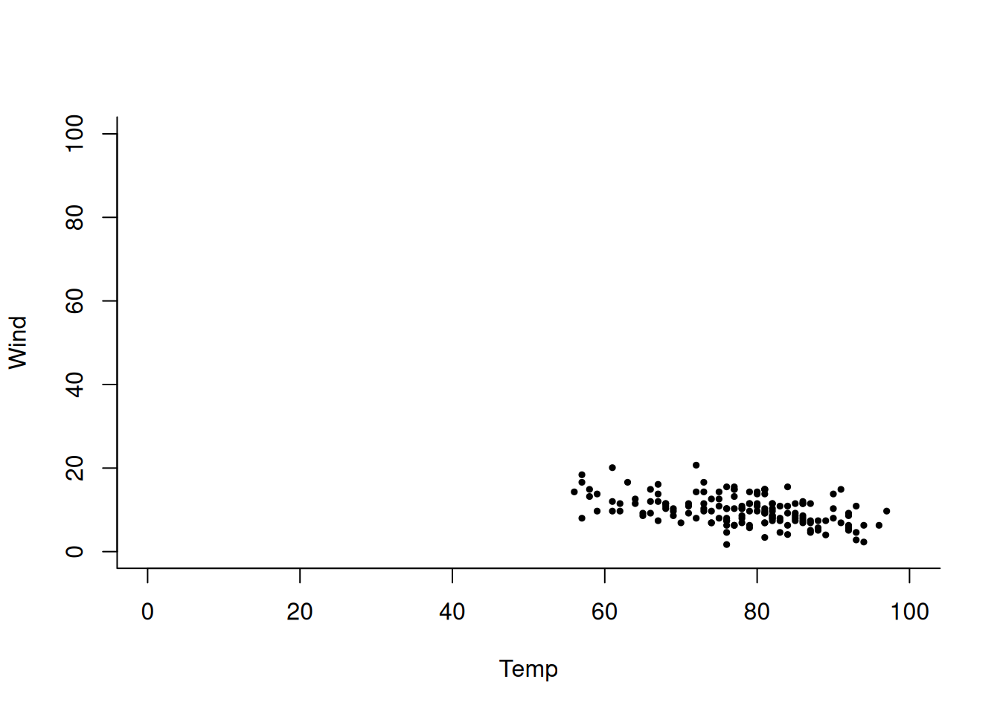
Can we predict wind speed from temperature?
In the class, we estimated together that \(\alpha \approx 45\) and \(\beta \approx -0.5\).
Let’s now define this regression problem in terms of a loss function to optimize, and visualize the loss values. Where will our guessed point lie?
with( airquality, {
loss <- Vectorize( function( a, b ){
sum( ( Wind - a - b *Temp )^2 )
} )
a <- seq(10,100,.1); b <- seq(-1,1,.1);
contour( a, b, sqrt( outer( a, b, loss ) ) )
points( 45, -.5, col=2 )
} )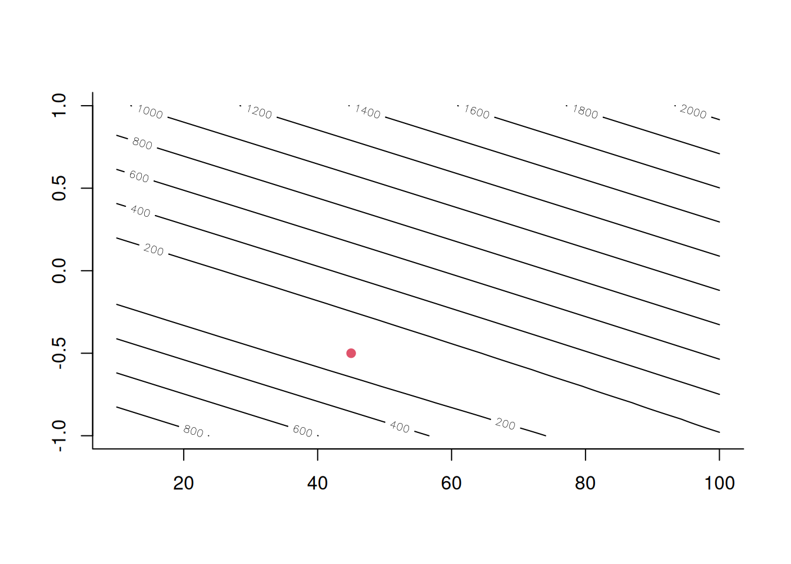
(Note that we’re visualizing the square root of the loss here because otherwise these numbers get too large to fast; but this doesn’t change the location of the optimum nor the general structure of the landscape.)
To actually find the best value, we’re going to use a built-in numerical optimizer in r, using the function nlm. Like any numerical optimizer, this requires some initial guess of what the optimal values might be; we could put in our guess from earlier, but for this specific loss function, it doesn’t matter too much and so we’ll start with a much worse guess: \(\alpha=\beta=1\).
with( airquality, {
loss <- function( x ){
sum( ( Wind - x[1] - x[2] *Temp )^2 )
}
nlm( loss, c(1,1) )
} )## $minimum
## [1] 1490.844
##
## $estimate
## [1] 23.2336881 -0.1704644
##
## $gradient
## [1] -2.576754e-07 -1.998046e-05
##
## $code
## [1] 1
##
## $iterations
## [1] 7For other loss functions, initialization can make a huge difference. For example, this was historically a thorny issue in getting neural networks to train. For our linear regression, however, we can be quite bad in our initial guesses could be quite bad and it’ll probably still work. We can see that the optimizer in fact only required six iterations to find the optimum. The loss value 1490 is much better than the value of 5000 that we got for our own guess earlier.
Let’s project the optimum we found onto our loss landscape:
a <- seq(10,100,.1); b <- seq(-1,1,.1);
with( airquality, {
lossv <- Vectorize( function( a, b ){
sum( ( Wind - a - b *Temp )^2 )
} )
contour( a, b, outer( a, b, lossv ) )
} )
points( 23.23, -0.17, col=2 )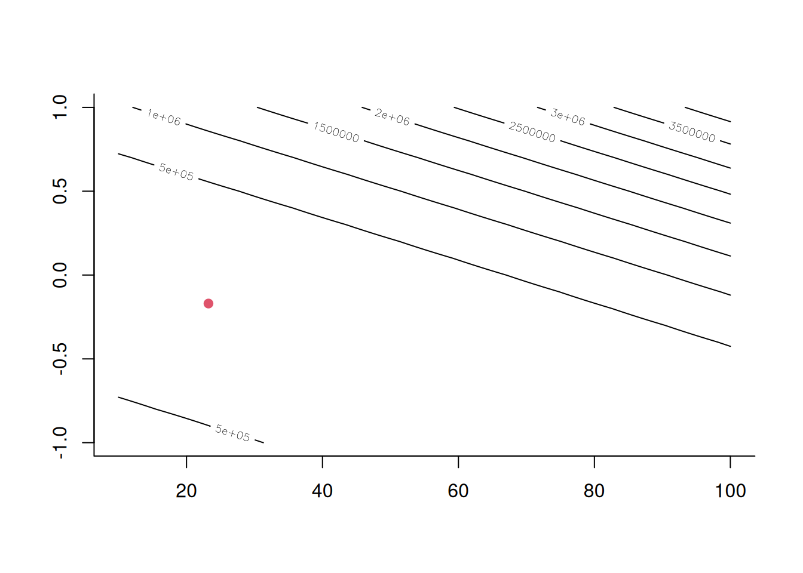
Now of course the linear regression has an analytical solution, as we saw earlier, so numerical optimization would not have been necessary. Yet, defining a loss function and optimizing it numerically is a general approach that is applicable to many models.
Beyond fitting, this method raises questions of inference: how confident can we be in the estimated parameters given only a sample of data? A model may return precise numerical results, but those values can shift if the data changes.
We’ll discuss this in more detail later, but a quick look at the loss contour plots helps assess uncertainty. For instance, in this case we can be fairly confident about the slope’s direction—positive versus negative — which is important since if the slope were positive, that would fundamentally change our interpretation of the relationship. Still, small shifts in the data could alter estimates, meaning conclusions about correlation strength or intercept size carry varying levels of uncertainty.
Now let’s wrap this part up by checking if we can get the same results using the built-in R function lm for linear regression:
##
## Call:
## lm(formula = Wind ~ Temp, data = airquality)
##
## Residuals:
## Min 1Q Median 3Q Max
## -8.5784 -2.4489 -0.2261 1.9853 9.7398
##
## Coefficients:
## Estimate Std. Error t value Pr(>|t|)
## (Intercept) 23.23369 2.11239 10.999 < 2e-16 ***
## Temp -0.17046 0.02693 -6.331 2.64e-09 ***
## ---
## Signif. codes: 0 '***' 0.001 '**' 0.01 '*' 0.05 '.' 0.1 ' ' 1
##
## Residual standard error: 3.142 on 151 degrees of freedom
## Multiple R-squared: 0.2098, Adjusted R-squared: 0.2045
## F-statistic: 40.08 on 1 and 151 DF, p-value: 2.642e-09Yes, we get the exact same coefficients! The lm function is of course a bit more powerful than our own implementation. For example, we can quite easily get confidence intervals for the model parameters:
## 2.5 % 97.5 %
## (Intercept) 19.0600210 27.407355
## Temp -0.2236649 -0.117264Our result lends support to the idea that there’s actually a negative relationship – the entire confidence interval for the regression coefficient is quite far away from 0. We’ll see later how we can compute these kind of confidence intervals ourselves (Lecture 4).
(Break)
3.5 Implementing your own regression model versus using a pre-packaged solution
Before I continue with an illustration of a custom loss function, I want to address a question some of you have asked: Do we need to use R in this course?
My answer would be: I don’t have a strong preference or recommendation for a programming language. What I would however recommend is to not
simply using prebuilt functions like lm() in R or model.fit() in scikit-learn to fit your regression models. Instead, I suggest you explicitly define a loss function and optimize it numerically.
This approach makes things more transparent and easier to experiment with different models and loss functions. If you like python, you can try to use the PyTorch framework, which nicely supports this prcess by providing optimizers and flexible ways to define losses. While standard packages are convenient, they often don’t allow you to change the model or loss function, so implementing a simple version manually can deepen understanding. Exercises like portfolio item 6 are not about building complex model using the latest packages, but about engaging with the mechanics of regression on a fundamental level.
I do want to emphasize that I don’t expect you to write your own numerical optimizer. Numerical optimization is hard to get right and this is beyond the scope of this course. Many excellent off-the-shelf numerical optimizers exist. It would be more important to spend your time on e.g. making a contour plot of the loss landscape in which you’re optimizing.
The reason I’m encouraging you now to follow this “semin-manual” approach is that models we’ll discuss in the coming weeks may not be available in existing off-the-shelf packages, so gaining hands-on experience now will help. You can use the code examples provided in the lecture notes and transcripts as a starting point and adapt these (you can easily convert them to Python if you want to with the help of AI).
3.6 The Huber loss
Let’s now look at an example that illustrates the effect of changing the loss function. I’ll illustrate this using the Huber loss that I briefly mentioned before. The Huber loss is in some sense an “interpolation” between squared error and absolute error. It is defined as follows:
\[ L_\delta(\mu, x) = \begin{cases} \frac{1}{2} (x-\mu)^2 & \text{if}\, \, \mid x - \mu\mid \leq \delta \\ \delta \left( \mid x - \mu \mid - \delta/2 \right) & \text{otherwise} \end{cases} \]
As you can see, the Huber loss is a hybrid loss function that transitions from using quadratic loss for small errors to absolute loss for larger errors. This transition is controlled by the parameter \(\delta\).
Let’s implement the Huber loss in R and plot it for two different values of \(\delta\) to see the effect.
huber <- Vectorize( function( x, mu, delta=1 ) {
if( abs( x - mu ) <= delta ){
(x-mu)^2 / 2
} else {
delta*(abs(x-mu)-delta/2)
}
} )
x <- 0; mu <- seq( -5, 5, by=.1 )
plot( mu, huber( x, mu ), t='l' )
lines( mu, huber( x, mu, delta=3 ), t='l', col=2 )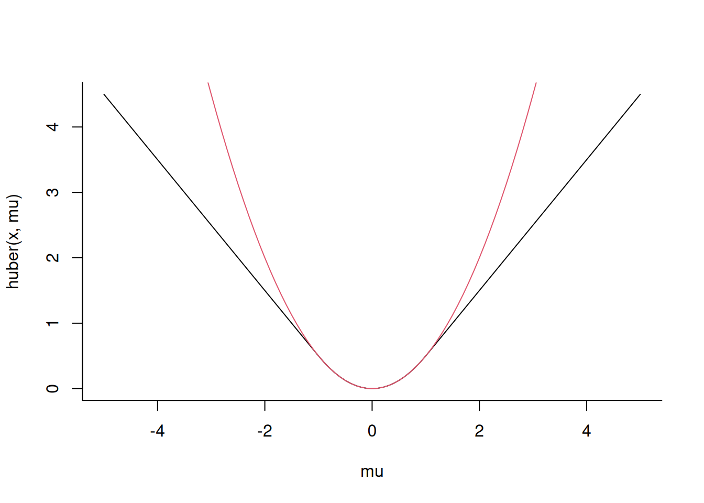
You can see that near zero, the Huber loss has a nice, smoothly quadratic shape. And then as you move towards larger values, it becomes linear. As we increase the value of \(\delta\), the Huber loss becomes more like the squared loss.
When would we use something like the Huber loss? Say we were to build a model that predicts tomorrow’s temperature, for example, and suppose we’re off by a 100 degrees (e.g. we predict 20 degrees but the data says it’s 120). Then a likely explanation could be that the dataset contains an error, since we don’t usually have this kind of temperatures. In such a case, where we have a large dataset in which we can’t rule out outliers but don’t want them to influence our results too much, might want to use something like the Huber loss.
Let’s now check how the loss landscape looks like for this loss. (In the lecture, I worked my way step by step from the version above to this version below, which required some debugging steps that I won’t repeat here.)
a <- seq(10,40,.1); b <- seq(-1,1,.1);
# We need a vectorized version of the loss now,
# as we need to compute a sum of losses
# for the whole dataset.
lossv <- Vectorize( function( a, b, delta=1 ){
err <- airquality$Wind - a - b*airquality$Temp
small <- err <= delta
err[small] <- 0.5*err[small]^2
err[!small] <- delta*(abs(err[!small])-delta/2)
return( mean( err ) )
} )
# We need to adjust the contour plot to
# better see the optimum
contour( a, b, outer( a, b, lossv ), levels=c(50,100,500,1000) )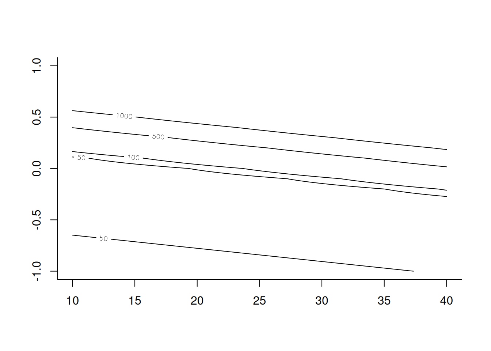
We see that the loss landscape has changed quite a bit, especially in terms of the values – note how I use the levels c(50,100,500,1000) in the code above to make the minimum clearly visible.
Now let’s see if we can find the optimum of our loss function, and plot it onto this loss landscape:
# We need a single argument vector for our minimization below
loss <- function(x) lossv( x[1], x[2] )
opt <- nlm( loss, c(1,1) )
contour( a, b, outer( a, b, lossv ), levels=c(50,100,500,1000) )
points( 23.23, -0.17, col=2 )
points(opt$estimate[1], opt$estimate[2], col=4)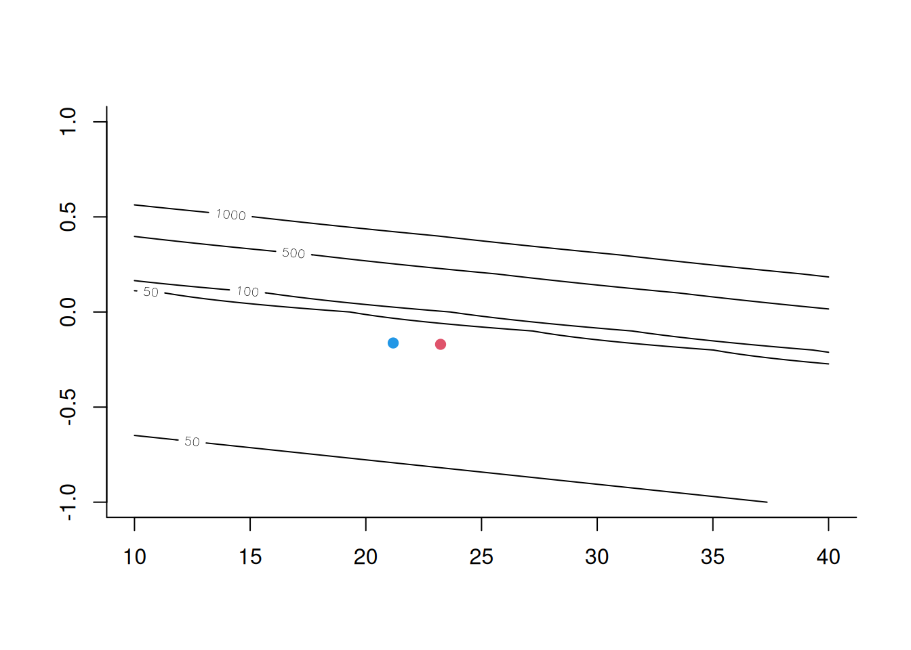
We see that the Huber loss optimum is not very different from our least squares optimum that we found earlier. Could we maybe have expected that?
I think maybe there weren’t a lot of outliers
Exactly, this data was quite well behaved, and it didn’t contain severe outliers, which we argued above would be the main reason to use the Huber loss in the first place.
Can we manually add an outliner and see how this affects things?
Yes, let’s do that! We’ll manually garble the first data value:
## $minimum
## [1] 2.96133
##
## $estimate
## [1] 20.2052478 -0.1498287
##
## $gradient
## [1] 2.415482e-10 1.893374e-08
##
## $code
## [1] 1
##
## $iterations
## [1] 30And let’s see how the two regression lines compare to each other:
plot( airquality$Temp, airquality$Wind )
abline( lm( Wind ~ Temp, airquality ), col=2 ) # red line: least squares
abline( a=huber_fit$estimate[1], b=huber_fit$estimate[2], col=4 ) # blue line: Huber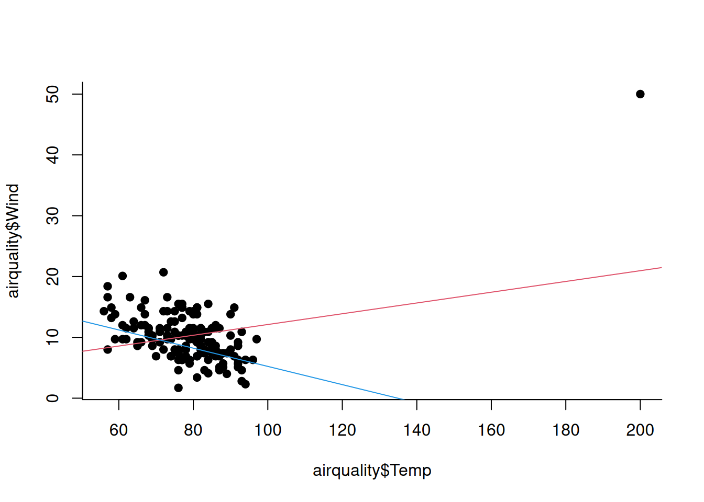
So, this clearly illustrates how the Huber loss is more robust to outliers. But is there any downside to using it?
Recall that we derived the conditional expectation as a predictor that minimizes the mean squared error. If we now change our loss function from squared loss to something like Huber loss, we lose this connection, since the Huber loss isn’t connected to a well-known statistical quantity like the mean. In that sense, the estimate we’re getting might become less interpretable. Again, whether that’s important for you depends on the application, but in inference we often do care about interpretability. In that sense, we have in fact some trade-off here between interpretability and robustness.
What could help with this is the realization that Huber interpolates between absolute error (which leads to the conditional median) and squared error (which leads to the conditional mean). Therefore, the prediction obtained by minimizing Huber loss is likewise somewhere in between these two well-understood statistical quantities. If we don’t expect mean and median should be very different, but we do see a big difference due to outliers in our data, then Huber loss might actually get us closer to the “real” conditional expectation.
Nevertheless, especially in high-stakes settings such as medical applications, analysists generally stay away from more complex loss functions like Huber since they are less easy to interpret and communicate.
And with that, I’ll leave you and I’ll see you on Monday!
3.7 Test your understanding
Which of the following best explains why squared loss is commonly used in regression?
- It always gives the most accurate predictions
- It has a direct connection to the conditional mean and is analytically tractable
- It is less sensitive to outliers than other loss functions
- It requires fewer data points to compute
The Huber loss function uses:
- Squared loss for all prediction errors
- Absolute loss for all prediction errors
- Squared loss for small errors and absolute loss for large errors
- Squared loss for large errors and absolute loss for small errors
What do the two constraints from the analytical solution of linear regression tell us about the residuals? (Hint: one is about their sum, the other about their correlation with predictors)
An M-estimator is defined as:
- A model that uses maximum likelihood estimation
- An estimator that minimizes an objective function
- A regression model with multiple variables
- An estimator that maximizes the mean squared error
In the air quality example, why didn’t the Huber loss produce a very different result from ordinary least squares?
Write the mathematical definition of a linear regression mdoel as a conditional expectation \(E[Y|X]\). Explain the meaning of the parameters.
The Cook’s distance in regression diagnostics measures:
- The correlation between variables
- The leverage or “pull” each data point has on the regression line
- The prediction accuracy of the model
- The normality of residuals
Suppose you’re building a temperature prediction model and encounter a data point predicting 20°C when the actual temperature was 120°C. Explain whether you’d prefer squared loss or Huber loss for this scenario and why.
(Moderate challenge question!) True of false: “For any dataset, if the Huber loss (with \(\delta=1\)) and squared loss produce identical parameter estimates, then the dataset contains no outliers.” In your answer, define what you mean by “outlier”.
(Challenge question!) Design and explain a data-dependent method to automatically choose the parameter \(\alpha\) of the Huber loss.